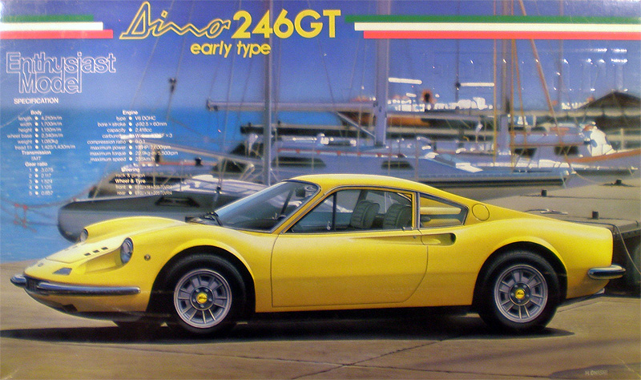
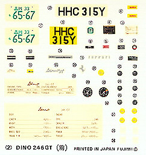
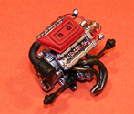
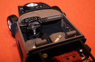
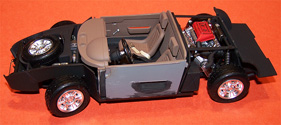

Fujimi 1/24 Ferrari Dino 246GT Early Version
 Kit #17 Collector’s Market Value $26.50 Images and text Copyright © 2011 by Matt SwanDevelopmental Background
The Dino nametag at Ferrari is intended to honor Enzo Ferrari's son,
Dino, who is credited with designing the V-6 engine. Dino and engineer Vittorio Jano were instrumental in
influencing Enzo to produce a series of race cars in the 1950's and 1960's using the V-8 and V-6
engines. The Dino of course was the V-6 powered version. The Dino was markets as an 'almost Ferrari'
intended to be an economical competitor of the Porsche 911. Dino lost his battle with MS in 1956 before the
Ferrari
Dino was completed and never got to see his V-6 engine in production.
In 1969 the 246GT entered the market with mid-mount 195bhp V-6 engine and a top speed of 148mph. Over the next two years there were a few slight modifications in ignition systems and body materials but overall the car was mostly unchanged. The 246GT and GTS were produced through 1974. In 1973 the Ferarri 308 was introduced which also carried the Dino nametag however it sported a 230 bhp V-8 and had a much different profile than the 246 and earlier 206. The 246 was simply a great looking car with excellent performance and reasonable fuel economy, definitely a fearsome competitor for the Porsche 911 and priced to match. Personally I feel the only weak point on the 246 was the heating system, in cold climates your feet were going to freeze.
The Kit
Way back when I had much more hair and much less waist line I purchased my first sports car, a 1970 Opel GT, the Baby Vette. It was at that time I decided my next car was going to have to be the 1972 Dino 246. Well, that dream never did come true and my next sports car was a Porsche but the 246 still captures my attention. A few years ago while at a local IPMS club kit auction this Fujimi kit came up and I was able to satisfy that old dream to a very small degree by stomping out all other bidders and taking this baby home. Only kit I bought that day that was not an airplane. Today I still see this kit showing up on E-Bay but with red box art, same kit just different artwork.
The simple act of opening the box and taking a quick look at the parts trees is enough to get the heart beat to accelerate just a little, this is a well detailed package. The multi-part body shot in white plastic is bagged separately and in nearly immaculate condition. There are a few very fine mold separation seams along the tops of the fenders and along the edges of the roof line that need to be sanded off but these are almost invisible at this point – an item that is very easily taken care of. The vinyl tires are preplaced on the chromed rims and bagged separately with individual knock-offs and attachment screws, a medium sprue of chrome exterior detail pieces is included along with a small sprue of white parts mostly associated with body hatches. A medium sprue of clear parts covers all the cockpit glass and various light lenses along with a display stand for the engine and a ID plate for the car. These parts are well cast with excellent clarity.
We get four sprues of medium gray injection molded parts that cover all the running gear, engine components and cabin parts. Mold separation seams vary from nearly nonexistent to medium on these parts and are easily shaved off with the flat edge of a razor knife. I did find a very few pieces with minimal flash on them and no evidence of sink marks anywhere within the kit. All parts fit together very well and once assembled presents the modeler with a very well detailed piece of art. Taking inventory of all the parts we have:
- 24 exterior chrome detail pieces not including rims.
- 5 chrome rims and 5 chrome knock-offs.
- 5 vinyl tires and 4 attachment screws.
- 21 clear parts.
- 6 primary body panels.
- 15 additional parts in white polystyrene.
- 150 medium gray parts on four trees.
- Total parts count = 235 parts of which only one or two may not be used.
You may click on these small images to view larger pictures
Decals and instructions
Kit instructions consist of an eight panel A-4 fold-out sheet. Almost all the text is in Japanese with only a few lines of English scattered through them. The historical background section on the car is completely in Japanese while general performance specifications have English subtitles. There is a complete parts maps included and a partial paint chart, by partial I mean it only covers exterior colors.  If you want to figure out what the interior color call-outs are you’ll need to reference possibly a Gunze paint code chart – most of it is pretty easy to figure out and a few quick internet searches will answer most questions on color.
There are eighteen exploded view assembly steps and every one of them includes a sub-view showing more detailed parts assembly, in some cases multiple viewing angles to assist the modeler in getting things lined up correctly. There are color call-outs throughout these steps however most of them do not relate back to the paint code chart so it’s back to the internet for research.
The kit includes a single small sheet of decals. Here we have a couple of license plate options, various manufacture logo plates and identification plates. Instrument panel details are provided here and while they look good on the sheet, once on the model it is quickly apparent that the print registry is slightly off. Overall color density is good and when decals are placed with a drop of Future floor polish they snuggle right down with no evidence of silvering.
Construction
The engine captured my interest first so construction began there. For the most part I worked with Alclad
paints here using aluminum for the block, heads and various components with Jet Exhaust for the manifolds.
Some

 Testors flat black and flat red offer some tonal variations here. I used some metallic red magnet wire to
create the ignition harness and placed a couple decal identification plates on the engine with Future as a
setting agent. The decals blend in so well as to be nearly invisible. Some judicious black sludge wash
was applied in a few areas and the engine was ready for installation.
Testors flat black and flat red offer some tonal variations here. I used some metallic red magnet wire to
create the ignition harness and placed a couple decal identification plates on the engine with Future as a
setting agent. The decals blend in so well as to be nearly invisible. Some judicious black sludge wash
was applied in a few areas and the engine was ready for installation.
Since I now have an engine I guess it would be a good idea to get the chassis ready to accept it. Other than some aluminum wheels and gold brake calipers there is not much color definition down here so I tried to break things up by using some magnesium, steel and dark aluminum in various places to add accent. Those rear coil springs are actually solid pieces of plastic that are simply painted with Alclad magnesium and washed with black sludge wash - they came out pretty convincing for so little effort. The trickiest part so far is the placement of the exhaust manifolds. These things have to be just right or the muffler will not fit nor will the aft deck. I was off just a little and had to grind a notch in the aft deck with my Dremel and stretch a piece of exhaust pipe to make my final connections. Sadly I have no advice to give to help avoid this situation to help you out should you be working this same project.
Pay attention when assembling the wheel hubs, you don't want to get any glue on part #D5 during assembly. This needs to rotate freely within the assembly. When the wheel and tire are screwed in place those little studs on the face of D5 provide a lock point so you can torque the screw down. I didn't figure this out until the last minute - maybe I'm a little slow or maybe I just build too many airplanes. I added more magnet wire on the cooling fans and the battery just to help dress up those items.
You may click on these small images to view larger pictures
All that is left to deal with on the chassis is the main cabin. Before starting this section I had to decide what exterior color I would be painting the car as we are now dealing with the customer optional areas. I did not want to use the standard signal yellow that is so popular with the French and is shown on this Boxart and felt that the red seen on the newer releases was also overused. I went to the Ferarri website and took a look at options that are customarily available on their cars. From here I selected a light tan leather interior to be combined with a deep metallic blue exterior. Okay, not a classic Ferarri color combination but still possible and something that would break up the automotive colors on my display shelf.  
Seatbelts were fashioned from strips of tan masking tape cut 2.5mm wide and attached to the hardware with spots of superglue. The hardware itself is provided as gray plastic parts which I painted gloss black then hit with some polished Alclad aluminum. Looking at the instrument panel you can see a slight sliver of white around each of the instrument dials; this is a result of the decal print registry being slightly off the mark. I guess for the time period it is not bad but by today's standards I would expect better, maybe I am too picky. Now that the cabin is complete I can start working on the body shell.
Construction Update 3/20/11
Okay, it’s time to get busy with the body. After scraping all the mold separation seams on the body and really there were not many but I was looking for as smooth a finish as possible, I wet sanded things with superfine sandpaper and wiped everything down. The interior cabin was masked off and the body, with all hatches taped in place, was shot with Alclad Pale Gold. As with any primer this made any minor defects show up quite easily and after they were repaired the body got two more coats of Pale Gold and was allowed to cure overnight.
The next day I dusted the body with compressed air to remove any dust or lint that may have found its way there and prepared for the first coat of Alclad Transparent Blue. I must have put down five or six coats before I had the color density I was looking for then the car went under a box top to cure for the night. The box top was just to act as a dust shield. After curing the body was coated with Future floor finish cut 30% with Simple Green. This provides a very wet look when dry. Now the masks are removed and the clear parts installed. I was presented with a problem getting the shoulder harnesses to lay down with the cabin sealed up so elected to remove the driver’s side window and just leave it open. This way I could reach in with a pick and place the shoulder belts. I could have stuck the remaining piece of clear for that window to a tacky probe and installed it but decided to just leave it as is. Now the body can be placed on the chassis.
Putting this thing on the chassis was no easy taks. The nose has to slip into the body shell, the sides need to flex out and the rear needs to slip into the body shell – a nearly impossible combination of actions. With the judicious use of several flat jeweler’s screw drivers as pry bars I finally got everything to snap in place without causing any damaged – amazed myself. Next the chrome parts get placed mostly using medium superglue and accelerator to prevent fogging. After the chrome parts were done and all fingerprints removed with a dust cloth I applied two more coats of Future/Simple Green with a wide soft brush and placed the car back under the dust shield for its final cure.
You may click on these small images to view larger pictures
Overall this was a fun build, for the most part everything fit together very well and the quality of the parts was good. At some points I found the instructions to be vague and the modeler really needs to spend some time studying these things and test fitting parts, especially those parts that will move when the model is complete. This makes a great addition to my slowly growing model car collection.